생산자동화산업기사 (2018-04-28 기출문제)
1과목: 기계가공법 및 안전관리
1. 화재를 A급, B급, C급, D급으로 구분했을 때, 전기화재에 해당하는 것은?
- A급
- B급
- C급
- D급
(정답률: 75%)

2. 절삭유의 사용목적으로 틀린 것은?
- 절삭열의 냉각
- 기계의 부식 방지
- 공구의 마모 감소
- 공구의 경도 저하 방지
(정답률: 65%)
3. 윤활제의 구비조건으로 틀린 것은?
- 사용 상태에 따라 점도가 변할 것
- 산화나 열에 대하여 안정성이 높을 것
- 화학적으로 불활성이며 깨끗하고 균질할 것
- 한계 윤활 상태에서 견딜 수 있는 유성이 있을 것
(정답률: 89%)
4. CNC프로그램에서 보조기능에 해당하는 어드레스는?
- F
- M
- S
- T
(정답률: 73%)
5. 도금을 응용한 방법으로 모델을 음극에 전착시킨 금속을 양극에 설치하고, 전해액 속에서 전기를 통전하여 적당한 두께로 금속을 입히는 가공방법은?
- 전주가공
- 전해연삭
- 레이저가공
- 초음파가공
(정답률: 55%)
6. 드릴작업 후 구멍의 내면을 다듬질하는 목적으로 사용하는 공구는?
- 탭
- 리머
- 센터드릴
- 카운터 보어
(정답률: 80%)
7. 밀링가공에서 분할대를 사용하여 원주를 6° 30‘씩 분할하고자 할 때, 옳은 방법은?
- 분할크랭크를 18공열에서 13구멍씩 회전시킨다.
- 분할크랭크를 26공열에서 18구멍씩 회전시킨다.
- 분할크랭크를 36공열에서 13구멍씩 회전시킨다.
- 분할크랭크를 18공열에서 1회전하고 5구멍씩 회전시킨다.
(정답률: 61%)
8. 밀링머신에 포함되는 기계장치가 아닌 것은?
- 니
- 주축
- 컬럼
- 심압대
(정답률: 75%)
9. 드릴링 머신 작업 시 주의해야 할 사항 중 틀린 것은?
- 가공 시 면장갑을 착용하고 작업한다.
- 가공물이 회전하지 않도록 단단하게 고정한다.
- 가공물을 손으로 지지하여 드릴링하지 않는다.
- 얇은 가공물을 드릴링할 때에는 목편을 받친다.
(정답률: 89%)
10. 원형 부분을 두 개의 동심의 기하학적 원으로 취했을 경우, 두 간격이 최소가 되는 두 원의 반지름의 자로 나타내는 형상 정밀도는?
- 원통도
- 직각도
- 진원도
- 평행도
(정답률: 70%)
11. 다음 나사의 유효지름 측정방법 중 정밀도가 가장 높은 방법은?
- 삼침법을 이용한 방법
- 피치 게이지를 이용한 방법
- 버니어캘리퍼스를 이용한 방법
- 나사 마이크로미터를 이용한 방법
(정답률: 70%)
12. 일반적인 보통선반 가공에 관한 설명으로 틀린 것은?
- 비이트 절입량의 2배로 공작물의 지름이 작아진다.
- 이동속도가 빠를수록 표면거칠기는 좋아진다.
- 절삭속도가 증가하면 비이트의 수명은 짧아진다.
- 이송속도가 공작물의 1회전 당 공구의 이동거리이다.
(정답률: 79%)
13. 연삭 작업에서 숫돌 결합제의 구비조건으로 틀린 것은?
- 성형성이 우수해야 한다.
- 열이나 연삭액에 대하여 안전성이 있어야 한다.
- 필요에 따라 결합 능력을 조절할 수 있어야 한다.
- 충격에 견뎌야 하므로 기공 없이 치밀해야 한다.
(정답률: 70%)
14. 다음 3차원 측정기에서 사용되는 프로브 중 광학계를 이용하여 얇거나 연한 재질의 피측정물을 측정하기 위한 것으로 심출현미경, CMM계측용 TV시스템 등에 사용되는 것은?
- 전자식 프로브
- 접촉식 프로브
- 터치식 프로브
- 비접촉식 프로브
(정답률: 70%)
15. 선반작업에서 구성인선(built-up edge)의 발생 원인에 해당하는 것은?
- 절삭 깊이를 적게 할 때
- 절삭속도를 느리게 할 때
- 바이트의 윗면 경사각이 클 때
- 윤활성이 좋은 절삭유제를 사용할 때
(정답률: 57%)
16. 밀링작업에서 분할대를 사용하여 직접 분할할 수 없는 것은?
- 3등분
- 4등분
- 6등분
- 9등분
(정답률: 63%)
17. 4개의 조가 90° 간격으로 구성 배치되어 있으며, 보통 선반에서 편심가공을 할 때 사용되는 척은?
- 단동척
- 연동척
- 유압척
- 콜릿척
(정답률: 72%)
18. 가늘고 긴 일정한 단면모양을 가진 공구를 사용하여 가공물의 내면에 키 홈, 스플라인 홈, 원형이나 다각형의 구멍 형상과 외면에 세그먼트 기어, 홈, 특수한 외면의 형상을 가공하는 공작기계는?
- 기어 셰이퍼(gear shaper)
- 호닝 머신(honing machine)
- 호빙 머신(hobbing machine)
- 브로칭 머신(broaching machine)
(정답률: 71%)
19. 공작물을 센터에 지지하지 않고 연삭하며, 가늘고 긴 가공물의 연삭에 적합한 특징을 가진 연삭은?
- 나사 연삭기
- 내경 연삭기
- 외경 연삭기
- 센터리스 연삭기
(정답률: 88%)
20. 표면 프로파일 파라미터 정의의 연결이 틀린 것은?
- Rt-프로파일의 전체 높이
- Rsm-평가 프로파일의 첨도
- Rsk-평가 프로파일의 배대칭도
- Ra- 평가 프로파일의 산술 평균 높이
(정답률: 46%)
2과목: 기계제도 및 기초공학
21. 다음 중 표면의 결을 도시할 때 제거가공을 허용하지 않는다는 것을 지시한 것은?
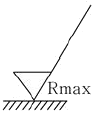
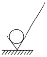
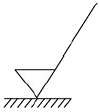
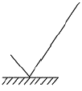
(정답률: 76%)
22. 그림에서 치수 500과 같이 치수 밑에 굵은 실선을 적용하였을 때 이 치수에 대한 해석으로 옳은 것은?
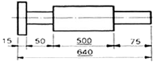
- 500의 치수 부분은 비례척이 아님
- 치수 500만큼 표면 처리를 함
- 치수 500 부분을 정밀 가공을 함
- 치수 500은 참고 치수임
(정답률: 63%)
23. 다음 중 복렬 자동 조심 볼 베어링에 해당하는 베어링 간략기호는?
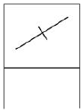
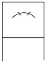
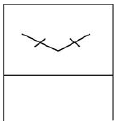
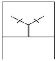
(정답률: 79%)
24. 그림과 같이 경사지게 잘린 사각뿔의 전개도로 가장 적합한 형상은?
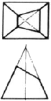
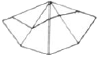
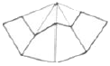
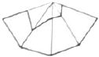
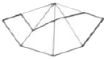
(정답률: 70%)
25. 보기와 같은 내용의 기하공차를 표시한 것 중 옳은 것은?
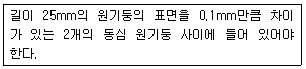
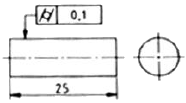
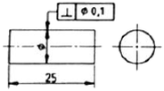
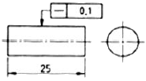
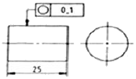
(정답률: 76%)
26. 그림과 같은 도면의 양식에서 각 항목이 지시하는 부위의 명칭이 틀린 것은?
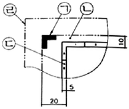
- ㉠ : 재단 마크
- ㉡ : 재단 용지
- ㉢ : 비교 눈금
- ㉣ : 재단하지 않은 용지 가장자리
(정답률: 65%)
27. 스퍼기어를 제도할 경우 스퍼기어 요목표에 일반적으로 기입하는 항목으로 거리가 먼 것은?
- 기준 피치원 지름
- 모듈
- 압력각
- 기어의 이폭
(정답률: 63%)
28. 그림과 같이 개개의 치수공차에 대해 다른 치수의 공차에 영향을 주지 않기 위해 사용하는 치수 기입법은 무엇인가?
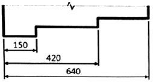
- 직렬 치수 기입법
- 병렬 치수 기입법
- 누진 치수 기입법
- 좌표 치수 기입법
(정답률: 75%)
29. 그림과 같은 입체도를 제3각법으로 투상한 투상도로 옳은 것은?
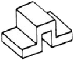
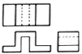
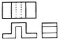
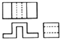
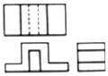
(정답률: 76%)
30. 조립 전의 구멍 치수가
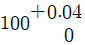
, 축의 치수가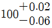
일 때 최대 틈새는?- 0.02
- 0.06
- 0.10
- 0.04
(정답률: 77%)
31. 그림과 같이 직경이 90cm인 풀 리가 180rpm으로 회전할 때 발생하는 전달마력[PS]은?
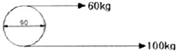
- 4.52
- 5.52
- 6.52
- 7.52
(정답률: 40%)
32. 다음 그림(응력-변형률곡선)에서 A점을 비례한도라고 할 때 B점(응력)의 명칭은?
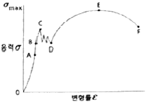
- 하한 값
- 극한강도
- 탄성한도
- 파괴강도
(정답률: 79%)
33. 축전지의 용량을 표시하는 단위로 옳은 것은?
- V
- Ah
- kVA
- kWh
(정답률: 62%)
34. 직경이 D인 원의 면적을 구하는 식으로 옳은 것은?
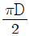
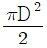
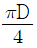
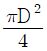
(정답률: 77%)
35. 철판에 1.5cm/s로 자동 용접할 수 있는 잠호용접기가 있다. 같은 철판을 2분 동안 용접한 거리는?
- 30cm
- 160cm
- 180cm
- 540cm
(정답률: 86%)
36. 회전 모멘트에 대한 설명이 틀린 것은?
- 물체에 가하는 힘이 크면 회전 모멘트는 크다.
- 회전 모멘트의 단위는 힘과 거리 단위의 곱이다.
- 회전 중심에서 힘이 가해지는 곳까지의 선분 길이가 길면 회전 모멘트는 크다.
- 힘이 가해지는 곳까지의 선분과 힘이 이루는 각이 180°일 때 회전 모멘트는 크다.
(정답률: 68%)
37. 바다 속 10m에 있는 물체에 가해지는 바닷물의 압력(게이지 수압)은 약 얼마인가? (단, 바닷물의 밀도는 1.03g/cm3이다.)
- 101kPa
- 110kPa
- 111kPa
- 121kPa
(정답률: 57%)
38. 여러 개의 저항을 하나의 패키지(package)형태로 만든 저항은?
- 가변 저항
- 고정 저항
- 반고정 저항
- 어레이 저항
(정답률: 74%)
39. 가정용 형광등에 사용하는 교류전압을 실효값이 220V이다. 이 교류전압의 최대값은 약 얼마인가?
- 110.15V
- 220.13V
- 244.15V
- 311.13V
(정답률: 62%)
40. 그림과 같이 두 힘을 합성할 때 합력의 크기는?
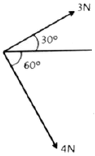
- 3.5N
- 5N
- 7N
- 12N
(정답률: 63%)
3과목: 자동제어
41. 정보처리 회로에서 서보 기구로 보내는 신호의 형태는?
- 변위
- 전류
- 전압
- 펄스
(정답률: 75%)
42. 어큐물레이터(accumulator)의 용도로 틀린 것은?
- 에너지 축적용
- 펌프 맥동 흡수용
- 충격 압력의 완충용
- 오일 중 공기나 이물질 분리용
(정답률: 71%)
43. 1차 지연요소의 전달함수는? (단, K : 이득상수, T : 시정수, s : 라플라스연산자이다.)
- 1+Ls
- 1+Ls+Ks2
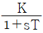
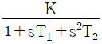
(정답률: 80%)
44. 다음 중 로터리 엔코더에서 출력되는 펄스 신호를 PLC에 입력하기 위해서 사용하는 특수 유니트의 명칭은?
- PID 유니트
- D/A변환 유니트
- 고속 카운터 유니트
- 컴퓨터 링크 유니트
(정답률: 56%)
45. NC 공작기계의 주요 구성부가 아닌 것은?
- 스크루
- 입력부
- 서보 제어부
- 연산 제어부
(정답률: 68%)
46. 다음 중 인칭(inching) 회로를 사용하는 목적으로 옳은 것은?
- 전압을 높이기 위하여
- 사용자의 안전을 위하여
- 토크를 크게 하기 위하여
- 기동전류를 제한하기 위하여
(정답률: 66%)
47. PLC의 출력에 해당하지 않는 것은?
- lamp
- motor
- sensor
- solenoid valve
(정답률: 79%)
48. 4096bps를 사용하기 위한 1bit 전송시간은 약 몇 ms인가?
- 0.48
- 0.69
- 0.244
- 0.288
(정답률: 61%)
49. 서보 기구용 검출기 중 변위를 자기장의 변화로 감지하는 것은?
- 압력계
- 속도 검출기
- 전압 검출기
- 차동 변압기
(정답률: 65%)
50. 그림과 같은 되먹임 제어계의 전달함수는?
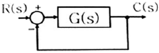
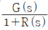
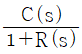
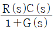
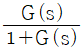
(정답률: 70%)
51. 다음 전기회로의 입력과 출력 간 전달함수
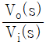
는?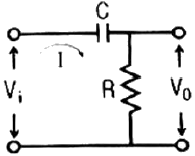
- RCs+1
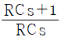
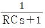
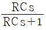
(정답률: 54%)
52. PLC의 RS232C 커넥터를 이용하여 PC와 직접 연결하려고 한다면, RXD단자는 상대편의 어느 단자와 연결해야 하는가?
- DCD
- DTR
- RXD
- TXD
(정답률: 63%)
53. 시퀀스제어 회로에서 스위치를 ON으로 조작하는 것과 동시에 작동하고 타이머의 설정시간 후에 정지하는 회로는?
- 반복 동작회로
- 지연 동작회로
- 일정시간 동작회로
- 지연복귀 동작회로
(정답률: 78%)
54. 10진법의 수 0에서 7까지의 2진법으로 표현하기 위한 최소 자릿수는?
- 1
- 2
- 3
- 4
(정답률: 79%)
55. 유압제어의 일반적인 특징으로 틀린 것은?
- 무단변속이 가능하다.
- 입력에 대한 출력 응답이 빠르다.
- 작은 장치로 큰 출력을 얻을 수 없다.
- 전기, 전자의 조합으로 자동제어가 가능하다.
(정답률: 65%)
56.
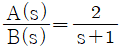
의 전달함수를 미분방정식으로 나타낸 것은?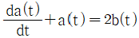
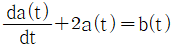
(정답률: 48%)
57. 스테핑 모터에 대한 설명으로 틀린 것은?
- 고속 운전 시에 탈조하기 쉽다.
- 회전각 검출을 위한 피드백이 필요 없다.
- 스테핑 모터의 총 회전각은 입력 펄스의 총수에 비례한다.
- 1스텝 당 각도 오차가 작고 회전각 오차는 스탭마다 누적된다.
(정답률: 45%)
58. 근궤적의 대칭에 대한 설명으로 옳은 것은?
- 대칭성이 없다.
- 원점과 대칭이다.
- 실수축과 대칭이다.
- 허수축과 대칭이다.
(정답률: 59%)
59. 피드백 제어계 중 물체의 위치, 각도 등의 기계적 변위를 제어량으로 하여 목표값의 임의의 변화를 추종하도록 구성된 제어계는?
- 서보제어
- 자동조정
- 프로그램 제어
- 프로세스 제어
(정답률: 84%)
60. 어떤 제어계에 대하여 단위 1인 크기의 계단입력에 대한 응답을 무엇이라 하는가?
- 과도 응답
- 선형 응답
- 정상 응답
- 인디셜 응답
(정답률: 62%)
4과목: 메카트로닉스
61. 다음 논리회로의 논리식은?
- S=AB
- S=A+B
(정답률: 58%)
62. 반도체의 도전성에 대한 설명으로 틀린 것은?
- P형 반도체의 반송자는 대부분 정공이다.
- N형 반도체의 반송자는 대부분 자유전자이다.
- 불순물 반도체는 자유전자만을 포함하고 있다.
- 진성 반도체의 반송자는 같은 수의 자유전자와 정공이 있다.
(정답률: 70%)
63. 센서의 신호변환에서 8개의 2진 신호를 가지고 0~10V의 아날로그 신호를 디지털 신호로 변환할 때 아날로그 신호의 분해능은 약 얼마인가?
- 0.027V
- 0.039V
- 0.⑤2V
- 0.068V
(정답률: 59%)
64. 구멍 가공 공정을 줄이기 위해 1개의 구동력으로 여러 개의 구멍을 동시에 뚫을 수 있는 드릴링 머신은?
- 다두 드릴링 머신
- 다축 드릴링 머신
- 탁상 드릴링 머신
- 레이디얼 드릴링 머신
(정답률: 72%)
65. AC 서보 모터의 특징으로 틀린 것은?
- 속도제어가 간단하다.
- 고속 특성이 우수하다.
- 토크 특성이 우수하다.
- 단상(single phase)과 다상(poly phase)의 형태이다.
(정답률: 55%)
66. 연산 증폭기의 응용 회로가 아닌 것은?
- 미분기
- 적분기
- 디지털 반가산증폭기
- 아날로그 가산증폭기
(정답률: 56%)
67. 입ㆍ출력장치와 CPU의 실행 속도 차를 줄이기 위해 사용되는 소형의 장치는?
- DMA
- RAM
- Channel
- Program Counter
(정답률: 56%)
68. 10진수 458을 이진화 십진법인 BCD 부호로 변환한 값은?
- 0100 0101 1000BCD
- 0101 0100 1011BCD
- 0101 0101 1001BCD
- 1000 0100 0101BCD
(정답률: 76%)
69. 이상적인 연산증폭기(OP AMP)의 특성 중 틀린 것은?
- 대역폭은 항상 0이다.
- 두 입력 단사 사이의 전압은 0이다.
- 온도에 따라 특성이 변화되지 않는다.
- V1=V2일 때 V1의 크기에 관계없이 V0=0이다.
(정답률: 57%)
70. 선반에서 4개의 조(jaw)가 각각 별도로 움직여 불규칙한 공작물을 고정할 때 쓰이는 척은?
- 단동 척
- 연동 척
- 콜릿 척
- 마그네틱 척
(정답률: 73%)
71. 정류자와 브러시가 있는 전동기는?
- 동기 전동기
- 유도 전동기
- 직류 전동기
- 스테핑 전동기
(정답률: 61%)
72. 10진수 423을 16진수로 변환하면?
- 1A616
- 1A716
- 1F616
- 1F716
(정답률: 63%)
73. 마이크로프로세서의 중앙처리장치가 기억장치에서 명령을 인출해 오는 사이클은?
- Fetch
- Direct
- Interrupt
- Execution
(정답률: 52%)
74. V=142sin(120πt-π/3)인 파형의 주파수 [Hz]는 얼마인가?
- 15
- 30
- 60
- 120
(정답률: 63%)
75. 자기력선의 설명으로 옳은 것은?
- 자력이 미치는 공간을 말한다.
- 자석 내부를 통과하는 자력선이다.
- 자력이 소유하고 있는 힘의 크기이다.
- 자력이 미치고 있는 가상적인 선을 말한다.
(정답률: 71%)
76. 지름 100mm의 공작물을 절삭길이 25mm, 회전속도 300rpm, 이송속도 0.25mm/rev으로 1회 가공할 때 소요되는 시간은 약 몇 초(sec)인가?
- 10
- 20
- 30
- 40
(정답률: 59%)
77. 직류 모터에서 접촉하는 브러시를 통하여 직류 전류를 공급하는 요소는?
- 고정자
- 전기자
- 정류자
- 회전자
(정답률: 79%)
78. 마이크로프로세서 장치로 들어가는 다음 입력 중에서 입력과 출력이 양방향(쌍방향)인 것은?
- 클럭 입력
- 인터럽트 입력
- 데이터버스 입력
- 어드레스 버스 입력
(정답률: 50%)
79. 다음 중 검출 방법이 접촉식은 것은?
- 근접 스위치
- 리밋 스위치
- 광전 스위치
- 초음파 스위치
(정답률: 79%)
80. 접시머리 나사의 머리 부분을 묻히게 하기 위해 자리를 파는 작업은?
- 스텝 보링(step boring)
- 스폿 페이싱(spot facing)
- 카운터 보링(counter boring)
- 카운터 싱킹(counter sinking)
(정답률: 66%)